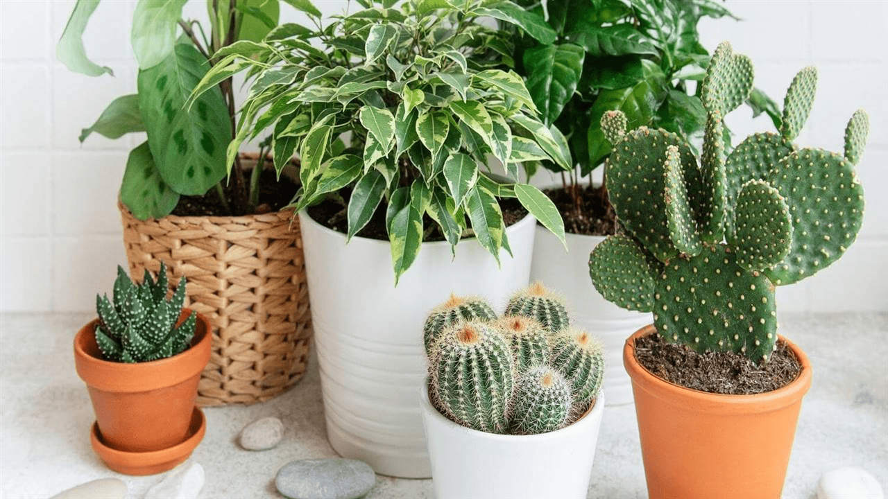
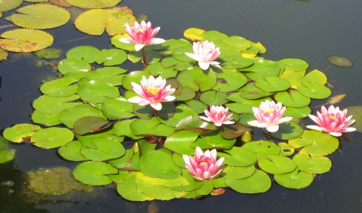

-
Succulent workshop
- The duration of the meeting by google meet is 2 hours. The total course lasts one week.
- We recommend having at hand the START BOX and BOX OF SEGMENTS for the whole reproduction part.
-
Online consulting workshop
- There will be an accompaniment and follow-up of all the topics seen on WhatsApp until the day of the live.
- For a month they will have free access to Instagram. Once the month has passed, the group will be deleted.
-
Cactus workshop
- The idea of the workshop is to give some botanical and morphological characteristics of what cacti are.
- Divide them into groups and talk about those details that must be taken into account for their multiplication.

-
Insecticide workshop
- The Organic Insecticides Workshop was held in the community of Periquito. Organic insecticides can be prepared with vegetative materials that grow nearby and/or natural materials that can be easily obtained, therefore, their use has the advantage that the cost of the insecticide is very low, in addition to the impacts to both the environment and humans are minimal.
- The community members are very interested in this and there was a lot of participation from both the members of the irrigation association and the youth.
-
Aquatic plants workshop
- Provide information on the relevant morphological characters to be taken into consideration for the knowledge and management of the different aquatic species for their cultivation and use in garden design.
- Deepen knowledge about the conservation of aquatic plants, training and disseminating the basic tools for successful cultivation and control of them.